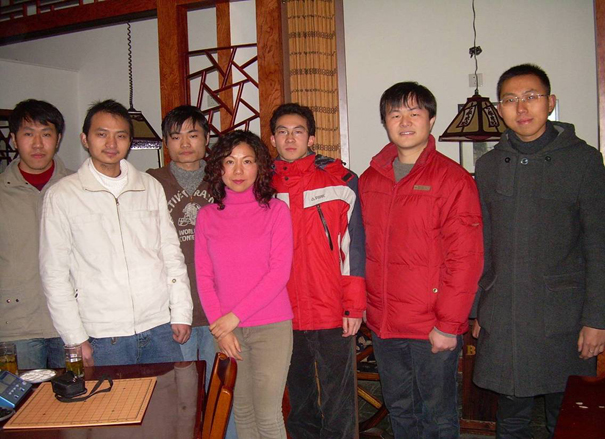
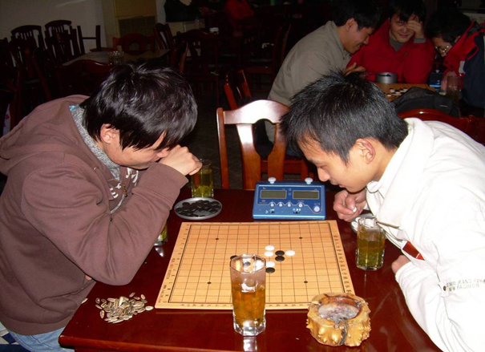
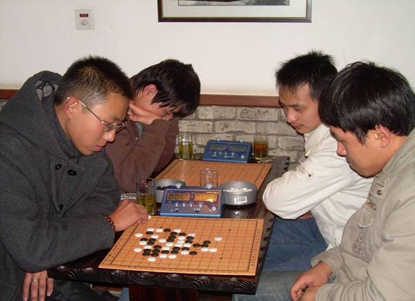
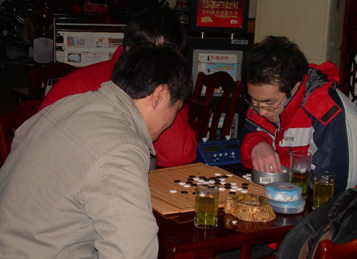
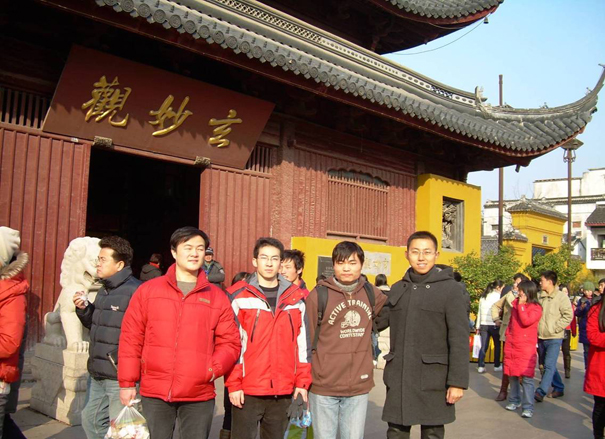
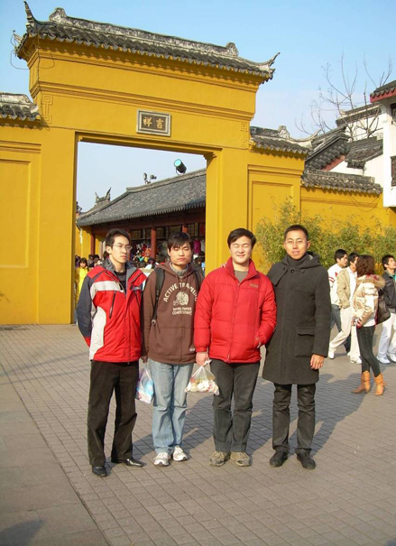

“元旦以棋会友”五子棋聚会活动照片
首页
江苏五子棋
#1 “元旦以棋会友”五子棋聚会活动照片 作者：罗马王子 发表时间：2009-1-4 15:24:01

左起：姜林、肖林、陈靖、Eva、郑勇、杨彬、傅亮

陈靖（左）与肖林（右）交流中

新人的实力不可小视

姜林（左）与郑勇（右）交流中

玄妙观前合影
左起：杨彬、郑勇、陈靖、傅亮

吉祥门前合影
左起：郑勇、陈靖、杨彬、傅亮
#2 Re:“元旦以棋会友”五子棋聚会活动照片 作者：有志青年 发表时间：2009-1-4 15:27:20
都是帅哥
#3 Re:“元旦以棋会友”五子棋聚会活动照片 作者：小丸.net 发表时间：2009-1-4 16:38:59
有一个美女.
#4 Re:“元旦以棋会友”五子棋聚会活动照片 作者：南京小飞机 发表时间：2009-1-4 19:02:33
乖乖 师父一席黑衣啊
#5 Re:“元旦以棋会友”五子棋聚会活动照片 作者：一期一会 发表时间：2009-1-4 21:16:38
 帅,很帅,太帅了!!!!!!!!!俄滴神啊~~
帅,很帅,太帅了!!!!!!!!!俄滴神啊~~
#6 Re:“元旦以棋会友”五子棋聚会活动照片 作者：茗弈小刀 发表时间：2009-1-19 22:37:15
哈哈！看着亮就想笑挺好的！可惜小飞没去。玄妙观前和吉祥门前合影蛮喜欢，很阳光！偶在想新绿老师提的什么好吃的呢。。。。。。。。。。。